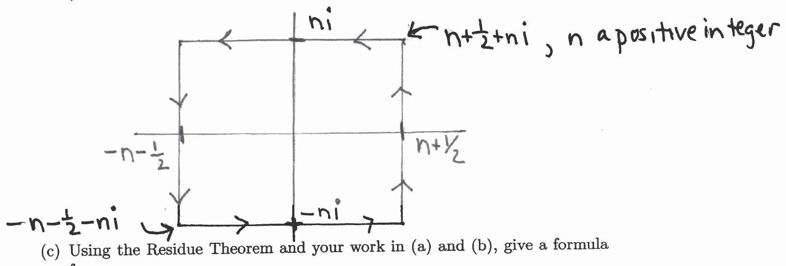

Analysis General Exam - August 2011
Closed book, closed notes. Please pledge. In each problem, justify
all assertions, show calculations, and identify those theorems which you
invoke in your arguments.
Problem 1
(a) Suppose that
is analytic in an open set containing the closed disk
:
and that
are two complex numbers with
and
.
Evaluate
where
is the positively oriented circle centered at 0 with radius
.
(b) Using your work in (a), prove Liouville's theorem on bounded entire
functions.
Problem 2
Let
be a real number that is not an integer and let
(a) Compute the residue of
at each of its singularities.
(b) Consider the rectangle
as shown. Show that
as
.
(You may give "order of magnitude" estimates in doing this.)

(c) Use your work in (a) and (b) to find a formula for
(d) What is
Problem 3
Suppose that
are
points in the open unit disk
.
Set
Show that for each
,
the equation
has
roots in
(counting multiplicities).
Problem 4
A function
that is analytic in the unit disk
is said to be subordinate to the analytic function
if
for some function
that is analytic in
and satisfies
there. This is written
.
(a) Show that if
,
then
.
(b) Suppose that
is analytic in
and
for all
.
Set
Show that
.
(Log denotes the principal branch.)
(c) Let
be as in (b). Show that
.
Problem 5
Let
be a measure space,
a
-algebra
of sets,
a measure defined on
.
Let
be the Hilbert space of square-integrable
-measurable
functions. Let
be a sub-
-algebra
of
and let
be the subspace of
consisting of functions in
which are
-measurable.
Let
be a function in
.
Show that there is a function
in
(in particular
-measurable)
such that
Explain your reasoning.
Problem 6
(a) Let
be a continuous real-valued function defined on the closed square
.
Show that
is lower semi-continuous in the sense that for each
and
,
there is a
such that
(b) Let
be a continuous real-valued function defined on
,
and for
define
By considering
,
show that the complement
of
is open, hence
is closed.
(c) Show that for
,
is a Borel measurable set of the real line.
Problem 7
Consider the real-valued function
,
defined by the (improper) Riemann integral
Show that
is a continuous function of
for
.
Hint: First integrate by parts to obtain an absolutely convergent
integral.
Problem 8
Let
be a square summable sequence of complex numbers such that
,
and set
for
.
(a) Show that for each
,
the series defining
converges for each
,
and that
is a bounded function of
.
In particular,
is in
,
the space of square-integrable functions on the interval
with Lebesgue measure.
(b) Let
be a sequence of numbers in
such that
.
Show that the sequence of functions
is an
-Cauchy
sequence.
(c) Let
the limit meaning in an
-sense.
Show that
for all integers
.